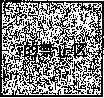

code/conc/race.c
#include "csapp.h"
#define N 4
void *thread(void *vargp); int mainO {
pthread_t tid[N]; int i;
for (i = 0; i < N; i++)
Pthread_create(fetid[i], NULL, thread, &i); for (i = 0; i < N; i++)
Ptliread_ j oin (tid [i] , NULL); exit(0);
/* Thread routine */ void *thread(void *vargp)
{
int myid = *((int *)vargp);
printf("Hello from thread %d\n", myid);
return NULL;
code/conc/race.c
图12-40 —个带竞争的程序
为了消除竞争，我们可以动态地为每个整数 ID 分配一个独立的块，并且传递给线程例程一 个指向这个块的指针，如图 12-41 所示（第 12 〜 14 行)。请注意线程例程必须释放这些块以避 免存储器泄漏。
当在系统上运行这个程序后，我们现在得到了正确的结果：
|
unix> |
./norace |
|
|
Hello |
from thread |
0 |
|
Hello |
from thread |
1 |
|
Hello |
from thread |
2 |
|
Hello |
from thread |
3 |
|
练习题 12.13在图 |
12.41 |
|
_ 我们可能想要在主线程中的第15行后立即释放已分配的存储器块，而
不是在对等线程中释放它。但是这会是个坏注意。这是为什么？
®练习题12.14 A.在图12.41中，我们通过为每个整数ID分配一个独立的块来消除竞争。给出一个不 调用 malloc 或 free 函数的不同的方法。
B.这种方法的利弊是什么？
； code/conc/norace. c
#include "csapp.h"
#define N 4
void *thread(void *vargp);
int mainO
pthread一t tid[N]; int i , *ptr;
for (i = 0; i < N; i++) {
ptr = Malloc(sizeof(int));
*ptr = i;
Pthread_create(fetid[i], NULL, thread, ptr);
>
for (i = 0; i < N; i++)
Pthread_join(tid[i] , NULL); exit(0);
>
A Thread routine */ void *thread(void *vargp)
{
int myid = *((int *)vargp);
Free(vargp);
printf("Hello from thread %d\n" , myid); return NULL;
>
code/conc/norace. c
图 12-41 图 12-40 中程序的一个没有竞争的正确版本 12.7.5 死锁
信号量引入了一种潜在的令人厌恶的运行时错误 ， 叫做死锁 （deadlock),它指的是一组线 程被阻塞了，等待一个永远也不会为真的条件。进度图对于理解死锁是一个无价的工具。例如, 图12-42展示了一对用两个信号量来实现互斥的线程的进度图。从这幅图中，我们能够得到一些 关于死锁的重要知识：
•程序员使用P和F操作顺序不当 ， 以至于两个信号量的禁止区域重叠。如果某个执行轨迹 线碰巧到达了死 锁状态 rf, 那么就不可能有进一步的进展了，因为重叠的禁止区域阻塞了 每个合法方向上的进展。换句话说，程序死锁是因为每个线程都在等待其他线程执行一个 根本不可能发生的K操作。
•重叠的禁止区域引起了一组称为死 锁区域 （deadlockregion)的状态。如果一个轨迹线碰巧 到达了一个死锁区域中的状态，那么死锁就是不可避免的了。轨迹线可以进入死锁区域, 但是它们不可能离开。
。死锁是一个相当困难的问题，因为它不总是可预测的。一些幸运的执行轨迹线将绕开死锁 区域，而其他的将会陷入这个区域。图12-42展示了每种情况的一个示例。对于程序员来 说，这其中隐含的着实令人惊慌。你可以运行一个程序1000次不出任何问题，但是下一 次它就死锁了。或者程序在一台机器上可能运行得很好，但是在另外的机器上就会死锁。 最糟糕的是，错误常常是不可重复的，因为不同的执行有不同的轨迹线。
程序死锁有很多原因，要避免死锁一般而言是很困难的。然而，当使用二元信号量来实现互
斥时， 如图12-42所示，你可以应用下面的简单而有效的规则来避免死锁 ：
互斥锁加锁顺序规则： 如果对于程序中每对互斥锁 0, 每个同时占用 s 和/的 线程都按照相同的顺序对它们加锁，那么这个程序就是无死锁的。
例如，我们可以通过这样的方法来解决图12-42中的死锁问题：在每个线程中先对 *9 加锁 , 然后再对 / 加锁。图12-43展示了得到的进度图。
|
无死锁的轨迹 |
|||||
|
咋 ) |
|||||
|
Vit) |
|||||
|
P{s) |
死锁状态 ? 的禁止区 |
||||
|
初始 J=1 t=l |
Pit)' |
L 死锁区 |
|||
|
k 有死锁的轨迹线 |
|||||
|
•.. P(s) |
... p(t) • • • V(s) • • • |
m |
|||
®练习题 12.15 思考下面的程序，它试图使用一对信号量来实现互斥。 初始时：s = l，t=0。
图 12-42 —个有死锁程序的进度图
线程2
线程 1 ; 线程 2 ;
NIy \ly z-s \ly
s s t t
/IV /l\ ✓Ix rx
p V p V
\J/ \l/ NJy
s s t t
/IN /IX
p V p V
画出这个程序的进度图。
它会总是死锁吗？
如果是，那么对初始信号量的值做哪些简单的改变就能消除这种潜在的死锁呢？
画出得到的无死锁程序的进度图。
12.8 小结
一个并发程序是由在时间上重叠的一组逻辑流组成的 。•在 这一章中，我们学习了三种不同的 构建并发程序的机制：进程、I/O多路复用和线程。我们以一个并发网络服务器作为贯穿全章的 应用程序。
进程是由内核自动调度的，而且因为它们有各自独立的虚拟地址空间，所以要实现共享数 据，必须要有显式的n>c机制。事件驱动程序创建它们自己的并发逻辑流，这些逻辑流被模型 化为状态机，用I/O多路复用来显式地调度这些流。因为程序运行在一个单一进程中，所以在流 之间共享数据速度很快而且很容易。线程是这些方法的综合。同基于进程的流一样，线程也是由 内核自动调度的。同基于I/O多路复用的流一样，线程是运行在一个单一进程的上下文中的，因 此可以快速而方便地共享数据。
无论哪种并发机制，同步对共享数据的并发访问都是一个困难的问题。提出对信号量的P 和r操作就是为了帮助解决这个问题。信号量操作可以用来提供对共享数据的互斥访问，也对 诸如生产者-消费者程序中有限缓冲区和读者一写者系统中的共享对象这样的资源访问进行调 度。一个并发预线程化的echo服务器提供了信号量使用场景的很好的例子。
并发也引入了其他一些困难的问题。被线程调用的函数必须具有一种称为线程安全的属性。 我们定义了四类线程不安全的函数，以及一些将它们变为线程安全的建议。可重入函数是线程安 全函数的一个真子集，它不访问任何共享数据。可重入函数通常比不可重入函数更为有效，因为 它们不需要任何同步原语。竞争和死锁是并发程序中出现的另一些困难的问题。当程序员错误地 假设逻辑流该如何调度时，就会发生竞争。当一个流等待一个永远不会发生的事件时，就会产生 死锁 。
参考文献说明
信号量操作是Dijkstra提出的[37]。进度图的概念是Coffinan[24]提出的，后来由Carson 和Reync)ld S [17]形式化的。Courtois等人[31]提出了读者-写者问题。操作系统教科书更详细 地描述了经典的同步问题，例如哲学家进餐问题、打瞌睡的理发师问题和吸烟者问题[98, 104, 112]。Butenhof的书[16]对Posix线程接口有全面的描述。Birrell[7]的论文对线程编程以及线 程编程中容易遇到的问题做了很好的介绍。Reinders的书[86]描述了 C/C++库，简化了线程化 程序的设计和实现。有一些课本讲述了多核系统上并行编程的基础知识[50, 67]。Pugh描述了 Java线程通过存储器进行交互的方式的缺陷，并提出了替代的存储器模型[84]。Gustafson提出 了替代强扩展的弱扩展加速模型[46]。
家庭作业
12.16
12.17
编写hello.c (见图12-13)的一个版本，它创建和回收《个可结合的对等线程，其中《是一个命 令行参数。
图12-44中的程序有一个bug。要求线程睡眠一秒钟，然后输出一个字符串。然而，当在我们的 系统上运行它时，却没有任何输出。这是为什么？
你可以通过用两个不同的Pthreads函数调用中的一个替代第9行中的exit函数来改正这个错 误。选择哪一个呢？
code/conc/hellobug. c
'i #include "csapp.h"
void 18 thread(void *vaxgp);
'3
int mainO
i ： , .-
pthread_t tid;
7
Pthread_create(fetid, NULL, thread, NULL);
exit(0);
/* Thread routine */ void *thread(void *vaxgp)
{
Sleep(1);
printf("Hello, world!\n"); return NULL;
= 12.18
*12.19
* 12.20
112.21
< 12.22
c 12.23
*12.25在图12-28中的预钱程化的并发echo服务器中，每个线程都调用echo_cnt函数（见图12-29)。 echo—cnt是线程安全的吗？它是可重入的吗？为什么是或为什么不是呢？
12.26用加锁-拷贝技术来实现gethostbyname的一个线程安全而又不可重入的版本，称为 gethostbyname_tSo 一个正确的解答是使用由互斥锁保护的hostent结构的深层拷贝。 **12.27 —些网络编程的教科书建议用以下的方法来读和写套接字：和客户端交互之前，在同一个打开的巳 连接套接字描述符上，打开两个标准I/O流，一个用来读，一个用来写：
FILE 19 fpin, *fpout;
fpin = fdopen(sockfd, "r"); fpout = fdopen(sockfd, "w");
当服务器完成和客户端的交互之后，像下面这样关闭两个流：
fclose(fpin); fclose(fpout);
然而，如果你试图在基于线程的并发服务器上尝试这种方式，你将制造一个致命的竞争条件。请解释。 *12.28在图12-43中，将两个P操作的顺序交换，对程序死锁是否有影响？通过画出四种可能情况的进度 图来证明你的答案：
情况1 |
情况2 |
情况3 |
情况4 |
||||
线程1 |
线程2 |
线程1 |
线程2 |
线程1 |
线程2 |
线程1 |
线程2 |
P(s) |
PCs) |
P(s) |
P(s) |
P(s) |
P(s) |
P(s) |
P(s) |
P(t) |
P(t) |
P(t) |
P(t) |
P(t) |
P(t) |
PCt) |
P(t) |
V(s) |
V(s) |
V(s) |
v(t) |
V(t) |
V(s) |
v(t) |
V(t) |
V(t) |
V(t) |
V(t) |
V(s) |
V(s) |
V(t) |
V(s) |
V(s) |
c b b C
✓IN /IN /!>
a b b c c a p p V p V V
线程3:
|
P(a); |
P(c) |
P(c) |
|
P(b); |
P(b) |
V(c) |
|
V(b); |
V(b) |
P(b) |
|
P(c); |
V(c) |
P(a) |
|
V(c); |
P(a) |
V(a) |
|
V(a); |
V(a) |
V(b) |
12.30考虑下面这个会死锁的程序。 初始时：a=l, b=l, c=l. 线程 1 : 线程 2 :
列出每个线程同时占用的一对互斥锁。
如果a<ZKc,那么哪个线程违背了互斥锁加锁顺序规则？
对于这些线程，指出一个新的保证不会发生死锁的加锁顺序。
实现标准I/O函数fgets的一个版本，叫做tfgets,假如它在5秒之内没有从标准输入上接收 到一个输入行 ， 那么就超时，并返回一个NULL指针。你的函数应该实现在一个叫做tfgets- proc.c的包中，使用进程、信号和非本地跳转。它不应该使用Unix的alarm函数。使用图 12-45中的驱动程序测试你的结果。
12.31
12.32
12.33
使用select函数来实现练习题12.31中tfgets函数的一个版本。你的函数应该在一个叫做 tfgets-select.c的包中实现。用练习题12.31中的驱动程序测试你的结果。你可以假定标准输 入被赋值为描述符 0 。
实现练习题12.31中tfgets函数的一个线程化的版本。你的函数应该在一个叫做tfgets- thread.c的包中实现。用练习题12.31中的驱动程序测试你的结果。
= code/conc/tfgets-main. c
#include "csapp.h"
2
char fgets(char *s, int size, FILE *stream);
4
int mainO
{
char buf[MAXLINE];
8
if (tfgets(buf, MAXLINE, stdin) == NULL)
printf("BOOM!\n")；
else
printf("%s", buf);
13
exit(O);
>
code/conc/tfgets-main. c
图12-45家庭作业题12.31〜12.33的驱动程序
12.34
12.35
12.36
12.37
H 12.38 12.39
编写一个WXM矩阵乘法核心函数的并行线程化版本。比较它的性能与顺序的版本的性能。
实现一个基于进程的TINY Web服务器的并发版本。你的解答应该为每一个新的连接请求创建一个 新的子进程。使用一个实际的Web浏览器来测试你的解答。
实现一个基于 VO 多路复用的UNYWeb服务器的并发版本。使用一个实际的浏览器来测试你的解答。 实现一个基于线程的TINYWeb服务器的并发版本。你的解答应该为每一个新的连接请求创建一个 新的线程。使用一个实际的浏览器来测试你的解答。
实现一个TINYWeb服务器的并发预线程化的版本。你的解答应该根据当前的负载，动态地增加或 减少线程的数目。一个策略是当缓冲区变满时，将线程数量翻倍，而当缓冲区变为空时，将线程数 目减半。使用一个实际的浏览器来测试你的解答。
Web代理是一个在Web服务器和浏览器之间扮演中间角色的程序。浏览器不是直接连接服务器以 获取网页，而是与代理连接，代理再将请求转发给服务器。当服务器响应代理时 ， 代理将响应发送 给浏览器。为了这个试验 ， 请你编写一个筒单的可以过滤和记录请求的Web代理：
在试验的第一部分中 ， 你要建立以接收请求的代理 ， 分析HTTP,转发请求给服务器，并且返回 结果给浏览器。你的代理将所有请求的URL记录在磁盘上一个日志文件中，同时它还要阻塞所 有对包含在磁盘上一个过滤文件中的URL的请求。
在试验的第二部分中 ， 你要升级代理，它通过派生一个独立的线程来处理每一个请求，使得代理 能够一次处理多个打开的连接。当你的代理在等待远程服务器响应一个请求使它能服务于一个浏 览器时 ， 它应该可以处理来自另一个浏览器未完成的请求。
使用一个实际的浏览器来检验你的解答。
练习题答案
练习题 12 . 1 当父进程派生子进程时，它得到一个巳连接描述符的副本，并将相关文件表中的引用计数从 1 增加到 2 。当父进程关闭它的描述符副本时，引用计数就从 2 减少到 1 。因为内核不会关闭一个文件，直 到文件表中它的引用计数值变为零，所以子进程这边的连接端将保持打开。
练习题 12 . 2 当一个进程因为某种原因终止时，内核将关闭所有打开的描述符。因此，当子进程退出时， 它的巳连接文件描述符的副本也将被自动关闭。
练习题12.3回想一下，如果一个从描述符中读一个字节的请求不会阻塞，那么这个描述符就准备好可以 读了。假如EOF在一个描述符上为真，那么描述符也准备好可读了，因为读操作将立即返回一个零返回 码，表示EOF。因此，键入Ctrl-d会导致select函数返回，准备好的集合中有描述符0。
练习题12.4因为变量pool.reacLset既作为输入参数也作为输出参数，所以我们在每一次调用 select之前都重新初始化它。在输入时，它包含读集合。在输出时，它包含准备好的集合。
练习题12.5因为线程运行在同一个进程中，它们都共享相同的描述符表。无论有多少线程使用这个巳连 接描述符，这个已连接描述符的文件表的引用计数都等于 1 。因此，当我们用完它时，一个close操作就 足以释放与这个巳连接描述符相关的存储器资源了。
练习题 12 . 6 这里的主要的思想是，栈变量是私有的，而全局和静态变量是共享的。诸如cnt这样的静态 变量有点小麻烦，因为共享是限制在它们的函数范围内的——在这个例子中，就是线程例程。
A.下面就是这张表：
变量实例 |
被主线程引用？ |
被对等线程 0 引用? |
被对等线程 1 引用？ |
Ptr |
是 |
是 |
是 |
cnt |
否 |
是 |
是 |
i .m |
是 |
否 |
否 |
msgs.m |
是 |
是 |
是 |
myid.pO |
否 |
是 |
否 |
myid.pl |
否 |
否 |
是 |
说明：
•ptr： 一个被主线程写和被对等线程读的全局变量。
•cnt: —个静态变量，在存储器中只有一个寒例，被两个对等线程读和写。
•i.m: —个存储在主线程栈中的本地自动变量。虽然它的值被传递给对等线程，但是对等线程也绝不 会在栈中引用它，因此它不是共享的。
•msgs.m： 一个存储在主线程栈中的本地自动变量，被两个对等线程通过ptr间接地引用。
myid. 0 和myid. 1 : —个本地自动变量的实例，分别驻留在对等线程 0 和线程 1 的栈中。
B•变量ptr、cnt和msgs被多于一个线程引用，因此它们是共享的。
练习题12.7这里的重要思想是，你不能假设当内核调度你的线程时，会如何选择顺序。
变量cnt最终有一个不正确的值 1 。
练习题 12.8 这道题简单地测试你对进度图中安全和不安全轨迹线的理解。像A和C这样的轨迹线绕开了 临界区，是安全的，会产生正确的结果。
H h L h U h S h H 2f L 2 , U 2i S 2 ， T 2i T x ：安全的
fh, [ 2 ， Hi’ Li, " 1 ， T\, " 2 ’ » 丁 2 ：不安全的
Hi, " 2 ’ L 2， " 2 , [ 1 ，" 1 ，*^ 1 ，『 1 ， ^2 ：安全的
练习题12.9
p=h c=h «>1:是，互斥锁是需要的，因为生产者和消费者会并发地访问缓冲区。
^=l, c=l, «=1:不是，在这种情况中不需要互斥锁信号量，因为一个非空的缓冲区就等于满的缓 冲区。当缓冲区包含一个项目时，生产者就被阻塞了。当缓冲区为空时，消费者就被阻塞了。所以 在任意时刻，只有一个线程可以访问缓冲区，因此不用互斥锁也能保证互斥。
p>l, Oh «=1:不是，在这种情况下 ， 也不需要互斥锁，原因与前面一种情况相同。
练习题 12.10 假设一个特殊的信号量实现为每一个信号量使用了一个LIFO的线程栈。当一个线程在尸操 作中阻塞在一个信号量上，它的ID就被压入栈中。类似地，r操作从栈中弹出栈顶的线程ID,并重启这个 线程。根据这个栈的实现，一个在它的临界区中竞争的写者会简单地等待，直到在它释放这个信号量之前 另一个写者阻塞在这个信号量上。在这种场景中，当两个写者来回地传递控制权时，正在等待的读者可能 会永远地等待下去。
注意，虽然用FIFO队列而不是用LIFO更符合直觉，但是使用LIFO的栈也是对的，而且也没有违反 P和F操作的语义。
练习题 12.11 这道题简单地检查你对加速比和并行效率的理解：
线程o) |
1 |
2 |
4 |
核 (P) |
1 |
2 |
4 |
运行时间（2；) |
12 |
8 |
6 |
加速比 CS P ) |
1 |
1.5 |
2 |
效率（&) |
100% |
75% |
50% |
练习题 12.12 ctime_ts函数不是可重入函数，因为每次调用都共享相同的由gethostbyname函数返回
的static变量。然而，它是线程安全的，因为对共享变量的访问是被/>和厂操作保护的，因此是互斥的。
练习题12.13如果在第15行调用了 pthreacLcreate之后，我们立即释放块，那么我们将引入一个新
的竞争，这次竞争发生在主线程对free的调用和线程例程中第25行的赋值语句之间。
练习题12.14 A.另一种方法是直接传递整数i,而不是传递一个指向i的指针：
for (i : 0; i < N; i++)
Pthread_create(fetid[i], NULL, thread, (void *)i);
在线程例程中，我们将参数强制转换成一个int类型，并将它赋值给myid:
int myid = (int) vargp;
B.优点是它通过消除对malloc和free的调用降低了开销。一个明显的缺点是，它假设指针至少和 int —样大。即便这种假设对于所有的现代系统来说都为真，但是它对于那些过去遗留下来的或今 后的系统来说可能就不为真了。
练习题12.15 A.原始的程序的进度图如图12-46所示。
因为任何可行的轨迹最终都陷入死锁状态中，所以这个程序总是会死锁。
为了消除潜在的死锁，将二元信号量t初始化为 1 而不是 0 。
改正后的程序的进度图如图12-47所示。
线程 2
•.. P(s) • •. V(s) ... P(t) . • • V(t) 图12-46 —个有死锁的程序进度图
线程 2

m

W
■5 = 1
- 线程 1
P(s) • •. V(s)
P(t)
图 12-47 改正后的无死锁的程序的进度图
附录 A|
Computer Systems : A Programmer' s Perspective, 2E
错误处理
程序员应该总是检查系统级函数返回的错误代码。有许多细微方式导致错误的出现，只有使 用内核能够提供给我们的状态信息才能理解为什么有这样的错误。不幸的是，程序员往往不愿意 进行错误检査，因为这使他们的代码变得很庞大，将一行代码变成一个多行的条件语句。错误检 查也是很令人迷惑的，因为不同的函数以不同的方式表示错误。
在编写本书时，我们面临类似的问题。一方面，我们希望我们的代码示例阅读起来简洁明 了 ；另一方面，我们又不希望给学生们一个错误的印象，以为可以省略错误检查。为了解决这些 问题，我们釆用了一种基于錯误处理包装函数（error-handle wrapper)的方法，这是由W.Richard Stevens在他的网络编程教材[109]中最先提出的。
其思想是，给定某个基本的系统级函数foo，我们定义一个有相同参数、只不过开头字母大 写了的包装函数Foo。包装函数调用基本函数并检査错误。如果包装函数发现了错误，那么它 就打印一条信息并终止进程。否则，它返回到调用者。注意，如果没有错误，包装函数的行为与 基本函数完全一样。换句话说，如果程序使用包装函数运行正确，那么我们把每个包装函数的第 一个字母小写并重新编译，也能正确运行。
包装函数被封装在一个源文件（csapp.c)中，这个文件被编译和链接到每个程序中。一 个独立的头文件(csapp.h)中包含这些包装函数的函数原型。
本附录给出了一个关于Unix系统中不同种类的错误处理的教程 ， 还给出了不同风格的错误 处理包装函数的示例。csapp • h和csapp • c文件可以从CS:APP网站上获得。
A.1 Unix 系统中的错误处理
本书中我们遇到的系统级函数调用使用三种不同风格的返回错误：Unix风格的、Posix风格 的和DNS风格的。
Unix风格的错误处理
像fork和wait这样Unix早期开发出来的函数（以及一些较老的Posix函数）的函数返回 值既包括错误代码，也包括有用的结果。例如，当Unix风格的wait函数遇到一个错误（例如 没有子进程要回收)，它就返回-1,并将全局变量errno设置为指明错误原因的错误代码。如 果wait成功完成，那么它就返回有用的结果，也就是回收的子进程的PID。Unix风格的错误处 理代码通常具有以下形式：
if ((pid = wait(NULL)) < 0) {
fprintf(stderr, "wait error: %s\n", strerror(errno));
exit(0) ;
}
strerror函数返回某个errno值的文本描述。
Posix风格的错误处理
许多较新的Posix函数，例如Pthread函数，只用返回值来表明成功（0)或者失败（非0)。 任何有用的结果都返回在通过引用传递进来的函数参数中。我们称这种方法为Posix风格的错误 处理。例如，Posix风格的 P thread_ Cr eat e 函数用它的返回值来表明成功或者失败，而通过
引用将新创建的线程的ID (有用的结果）返回放在它的第一个参数中。Posix风格的错误处理代 码通常具有以下形式：
if ((retcode = pthread_create(fetid, NULL, thread, NULL)) != 0) {
fprintf(stderr, "pthread_create error: %s\n",
strerror(retcode));
exit(0);
DNS风格的错误处理
gethostbyname和gethostbyaddr函数检索DNS (域名系统）主机条目，它们有另外 一种返回错误的方法。这些函数在失败时返回NULL指针，并设置全局变量11_^二11 0 。DNS风 格的错误处理通常具有以下形式：
if ((p = gethostbyname(name)) == NULL) {
fprintf (stderr, "gethostbyname error: °/ 0 s\n:",
hstrerror(h_errno));
exit(0);
4.错误报告函数小结
贯穿本书，我们使用下列错误报告函数来包容不同的错误处理风格
#include "csapp.h" |
|
void unix_error(char 20 msg); |
|
void posix_error(int code, char *msg); |
|
void dns_error(char *msg); • |
|
void app_error(char *msg); |
|
返回：无。 |
正如它们的名字表明的那样，unix_error、posix_error和dns一error函数报告Unix 风格的错误、Posix风格的错误和DNS风^的错误，然后终It。包括app—error函数是为了方便 报告应用错误。它只是简单地打印它的输入，然后终止。图A-1展示了这些错误报告函数的代码。
exit(O);
void app_error(char *msg) /* Application error */
{
fprintf(stderr, "%s\n", msg);
exit(0) ;
>
code/src/csapp.c
图 A-l ( 续）
code/src/csapp. c
pid_t Wait(int *status)
{
pid_t pid;
4
if ((pid 二 wait(status)) < 0)
nnix_error("Wait error");
return pid;
>
code/src/csapp.c
图 A-2 Unix 风格的 wait 函数的包装函数
A.2 错误处理包装函数
下面是一些不同错误处理包装函数的示例： •
Unix 风格的错误处理包装函数。 图A-2展示了 Unix风格的wait函数的包装函数。如 果wait返回一个错误，包装函数打印一条消息，然后退出。否则，它向调用者返回一 个PID。图A-3展示了 Unix风格的kill函数的包装函数。注意，这个函数和wait不 同，成功时返回void。
code/src/csapp. c
void Kill(pid_t pid, int signum)
{
int rc;
4
if ((rc = kill(pid, signum)) < 0)
unix_error("Kill error");
}
code/src/csapp.c
图 A-3 Unix 风格的 kill 函数的包装函数
Posix 风格的错误处理包装 函数。 图 A-4展示了 Posix风格的pthread_detach函数的包 装函数。同大多数Posix风格的函数一样，它的错误返回码中不会包含 7 有用的结果，所以 成功时，包装函数返回void。
— code/src/cscip p. c
void Pthread_detach (pthread.t tid) {
int rc;
3
if ((rc = pthread.detach(tid) ) != 0)
posix_error(rc，"Pthread_detacli error' 21 )；
参考文献
Advanced Micro Devices, Inc. Software Optimization Guide for AMD64 Processors, 2005. Publication Number 25112.
Advanced Micro Devices, Inc. AMD64 Architecture Programmer’s Manual, Volume 1: Application Programming ， 2007. Publication Number 24592.
Advanced Micro Devices, Inc. AMD64 Architecture Programmer’s Manual, Volume 3: General-Purpose and System Instructions, 2007. Publication Number 24594.
K. Arnold, J. Gosling, and D. Holmes. The Java Programming Language, Fourth Edition. Prentice Hall, 2005.
V. Bala, E. Duesterwald，and S. Banerjiia. Dynamo: A transparent dynamic optimization system. In Proceedings of the 1995 ACM Conference on Programming Language Design and Implementation (PLDI), pages 1-12, June 2000 .
T. Bemers-Lee, R. Fielding, and H. Frystyk.
„ Hypertext transfer protocol - HTTP/1.0. RFC
1945,1996.
A. Birrell. An introduction to programming with threads. Technical Report 35, Digital Systems Research Center, 1989.
A. Birrell, M. Isard, C. Thacker, and T. Wobber. A design for high-performance flash disks. SIGOPS Operating Systems Review, 41(2 )，
2007.
R. Blum. Professional Assembly Language. Wiley, 2005.
S. Borkar. Thousand core chips—a technology perspective. In Design Automation Conference, pages 746-749. ACM, 2007.
D. Bovet and M. Cesati. Understanding the Linux Kernel, Third Edition. O’Reilly Media, Inc, 2005.
A. Demke Brown and T. Mowry. Taming the memory hogs: Using compiler-inserted releases
to manage physical memory intelligently. In Proceedings of the Fourth Symposium on Operating Systems Design and Implementation (OSDI), pages 31-44, October 2000.
R. E. Bryant. Term-level verification of a pipelined CISC microprocessor. Technical Report CMU-CS-05-195, Carnegie Mellon University, School of Computer Science, 2005.
R. E. Bryant and D. R. O’Hallaron. Introducing computer systems from a programmer’s perspective. In Proceedings of the Technical Symposium on Computer Science Education (SIGCSE). ACM, February 2001.
B. R. Buck and J. K. Hollingsworth. An API for runtime code patching. Journal of
^ High Performance Computing Applications, 14(4):317-324, June 2000.
D. Butenhof. Programming with Posix Threads. Addison-Wesley, 1997.
S. Carson and P. Reynolds. The geometry of semaphore programs. ACM Transactions on Programming Languages and Systems, 9(1):25- 53，1987.
J. B. Carter, W. C. Hsieh, L. B. Stoller, M. R. Swanson, L. Zhang, E. L. Brunvand, A. Davis,
-C. Kuo, R. Kuramkote, M. A. Parker，
L. Schaelicke, and T. Tateyama. Impulse: Building a smarter memory controller. In Proceedings of the Fifth International Symposium on High Performance Computer Architecture (HPCA), pages 70-79，January 1999.
S. Chellappa, F. Franchetti, and M. Ptischel. How to write fast numerical code: A small introduction. In Generative and Transformational Techniques in Software Engineering II, volume 5235，pages 196-259. Springer-Verlag Lecture Notes in Computer Science, 2008.
P. Chen, E. Lee, G. Gibson, R. Katz, and D. Patterson. RAID: High-performance, reliable secondary storage. ACM Computing Surveys, 26(2), June 1994.
S. Chen, P. Gibbons, and T. Mowry. Improving index performance through prefetching. In Proceedings of the 2001 ACM SIGMOD Conference. ACM, May 2001.
T. Chilimbi, M. Hill, and J. Larus. Cacheconscious structure layout. In Proceedings of the 1999 ACM Conference on Programming Language Design and Implementation (PJLDI )， pages 1-12. ACM, May 1999.
B. Cmelik and D. Keppel. Shade: A fast instruction-set simulator for execution profiling. In Proceedings of the 1994 ACM SIG- METRICS Conference on Measurement and Modeling of Computer Systems, pages 128-137, May 1994.
E. Coffman, M. Elphick, and A. Shoshani. System deadlocks. ACM Computing Surveys, 3(2):67-78，June 1971.
D. Cohen. On holy wars and a plea for peace. IEEE Computer, 14(10):48-54, October 1981.
Intel Corporation. Intel 64 and IA-32 Architectures Optimization Reference Manual, 2009. Order Number 248966.
Intel Corporation. Intel 64 and IA-32 Architectures Software Developer’s Manual, Volume 1: Basic Architecture, 2009. Order Number 253665.
Intel Corporation. Intel 64 and IA-32 Architectures Software Developer’s Manual，Volume 2: Instruction Set Reference A-M, 2009. Order Number 253667.
Intel Corporation. Intel 64 and IA-32 Architectures Software Developer's Manual, Volume 2: Instruction Set Reference iV-Z, 2009. Order Number 253668.
Intel Corporation. Intel 64 and IA-32 Architectures Software Developer's Manual, Volume 3a: System Programming Guide, Parti, 2009. Order Number 253669.
P. J. Courtois, F. Heymans, and D. L. Paraas. Concurrent control with “readers” and “writers.” Commun. ACM, 14(10):667-668,1971.
C. Cowan, P. Wagle, C. Pu, S. Beattie, and J. Walpole. Buffer overflows: Attacks and defenses for the vulnerability of the decade. In DARPA Information Survivability Conference and Expo (DISCEX), March 2000.
J. H. Crawford. The i486 CPU: Executing instructions in one clock cycle. IEEE Micro, 10(1):27-36, February 1990.
V. Cuppu, B. Jacob, B. Davis, and T. Mudge. A performance comparison of contemporary DRAM architectures. In Proceedings of the Twenty-Sixth International Symposium on Computer Architecture (ISCA), Atlanta, GA, May 1999. IEEE.
B. Davis, B. Jacob, and T. Mudge. The new DRAM interfaces: SDRAM, RDRAM, and variants. In Proceedings of the Third International Symposium on High Performance Computing (ISHPC), Tokyo, Japan, October 2000 .
E. Demaine. Cache-oblivious algorithms and data structures. In Lecture Notes in Computer Science. Springer-Verlag，2002.
E. W. Dijkstra. Cooperating sequential processes. Technical Report EWD-123, Technological University, Eindhoven, The Netherlands, 1965.
C. Ding and K. Kennedy. Improving cache performance of dynamic applications through data and computation reorganizations at run time. In Proceedings of the 1999 ACM Conference on Programming Language Design and Implementation (PLDI), pages 229-241. ACM, May 1999.
M. Dowson. The Ariane 5 software failure. SIG- SOFT Software Engineering Notes, 22(2):84, 1997.
M. W. Eichen and J. A. Rochlis. With microscope and tweezers: An analysis of the Internet virus of November, 1988. In IEEE Symposium on Research in Security and Privacy, 1989.
, R. Fielding, J. Gettys, J. Mogul, H. Frystyk,
L. Masinter, P. Leach, and T. Beraers-Lee. Hypertext transfer protocol _ HTTP/1.1. RFC 2616,1999.
M. Frigo, C. E. Leiserson, H. Prokop, and
S. Ramachandran. Cache-oblivious algorithms. In Proceedings of the 40th IEEE Symposium on Foundations of Computer Science (FOCS '99), pages 285-297. IEEE, August 1999.
[43】M. Frigo and V. Strumpen. The cache complexity of multithreaded cache oblivious algorithms.
In SPAA } 06: Proceedings of the Eighteenth Annual ACM Symposium on Parallelism in Algorithms and Architectures, pages 271-280, New York, NY, USA, 2006. ACM.
[44] G. Gibson, D. Nagle, K. Amiri, J. Butler,
Chang, H. Gobioff, C. Hardin, E. Riedel,
Rochberg, and J. Zelenka. A cost-effective, high-bandwidth storage architecture. In Proceedings of the International Conference on Architectural Support for Programming Languages and Operating Systems (ASPLOS). ACM, October 1998.
Gibson and R. Van Meter. Network attached storage architecture. Communications of the ACM, 43(11)，November 2000.
[46] J. Gustafson. Reevaluating Amdahl^ law. Communications of the ACM, 31(5), August 1988.
[47
L. Gwennap. New algorithm improves branch prediction. Microprocessor Report^ 9(4)，March 1995.
S. P. Harbison and G. L. Steele, Jr. C, A Reference Manual, Fifth Edition. Prentice Hall, 2002 .
J. L. Hennessy and D. A. Patterson. Computer Architecture: A Quantitative Approach, Fourth Edition. Morgan Kaufmann, 2007.
[51
M. Herlihy and N. Shavit. The Art of Multiprocessor Programming. Morgan Kau£mann, 2008.
A. R. Hoare. Monitors: An operating system structuring concept. Communications of the ACM, 17(10):549-557，October 1974.
[53
Intel Corporation. Tool Interface Standards Portable Formats Specification, Version 1.1’ 1993. Order Number 241597.
[54
F. Jones, B. Prince, R. Norwood, J. Hartigan, W. Vogley, C. Hart, and D. Bondurant. A new era of fast dynamic RAMs. IEEE Spectrum, pages 43-39, October 1992.
R. Jones and R. Lins. Garbage Collection: Algorithms for Automatic Dynamic Memory Management. Wley, 1996.
M. Kaashoek, D. Engler, G. Ganger, H. Briceo， R. Hunt, D. Maziers, T. Pinckney, R. Grimm,
J. Jannotti, and K. MacKenzie. Application per- fonnance and flexibility on Exokemel systems.
In Proceedings of the Sixteenth Symposium on Operating System Principles (SOSP), October 1997.
R. Katz and G. Bordello. Contemporary Logic Design, Second Edition. Prentice Hall, 2005.
B. Kernighan and D. Ritchie. The C Programming Language，First Edition. Prentice Hall, 1978.
B. Kernighan and D. Ritchie. The C Programming Language, Second Edition. Prentice Hall, 1988.
B. W. Kernighan and R. Pike. The Practice of Programming. Addison-Wesley, 1999.
T. Kilbura, B. Edwards, M. Lanigan, and F. Sumner. One-level storage system. IRE Transactions on Electronic Computers ， EC- 11:223-235, April 1962.
D. Knuth. The Art of Computer Programming, Volume 1: Fundamental Algorithms, Second Edition. Addison-Wesley, 1973.
J. Kurose and K. Ross. Computer Networking: A Top-Down Approach, Fifth Edition. Addison- Wesley, 2009.
M. Lam, E. Rothberg, and M. Wolf. The cache performance and optimizations of blocked algorithms. In Proceedings of the International Conference on Architectural Support for Programming Languages and Operating Systems (ASPLOS). ACM, April 1991,
J. R. Larus and E. Schnarr. EEL: Machine- independent executable editing, la Proceedings of the 1995 ACM Conference on Programming Language Design and Implementation (PLDI )， June 1995.
C. E. Leiserson and J. B. Saxe. Retiming synchronous circuitry. Algorithmica ， 6(1-6), June 1991.
J. R. Levine. Linkers and Loaders. Morgan Kaufmann, San Francisco, 1999.
C. Lin and L. Snyder. Principles of Parallel Programming. Addison-Wesley, 2008.
Y. Lin and D. Padim. Compiler analysis of irregular memory accesses. In Proceedings of the 2000 ACM Conference on Programming Language Design and Implementation (PLDI), pages 157-168. ACM, June 2000.
J. L. Lions. Ariane 5 Flight 501 failure. Technical [83]
report, European Space Agency, July 1996.
S. Macguire. Writing Solid Code, Microsoft Press, 1993.
S. A. Mahlke, W. Y. Chen, J. C. Gyllenhal, and [ 84 ]
W. W. Hwu. Compiler code transformations for superscalar-based high-performance systems.
In Supercomputing. ACM, 1992. [85]
E. Marshall. Fatal error: How Patriot overlooked a Scud. Science, page 1347，March 13,
1992. [ 86 ]
M. Matz, J. Hubicka, A. Jaeger, and M. Mitchell. rg 7 ^
System V application binary interface AMD64 architecture processor supplement. Technical report, AMD64.org, 2009,
J. Morris, M. Satyanarayanan, M. Conner, jggj
J. Howard, D. Rosenthal, and F. Smith. Andrew:
A distributed personal computing environment. Communications of the ACM, March 1986.
T. Mowry, M. Lam, and A. Gupta. Design [89]
and evaluation of a compiler algorithm for prefetching. In Proceedings of the International Conference on Architectural Support for Pro- rg^i
gramming Languages and Operating Systems (ASPLOS). ACM, October 1992.
S. S. Muchnick. Advanced Compiler Design and Implementation. Morgan Kaufmann, 1997.
S. Nath and P. Gibbons. Online maintenance of
very large random samples on flash storage. In [91]
Proceedings ofVLDBW. ACM, August 2008.
M. Overton. Numerical Computing with IEEE Floating Point Arithmetic. SIAM, 2001.
W. Pugh. The Omega test: A fast and practical integer programming algorithm for dependence analysis. Communications of the ACM, 35(8):102-114, August 1992.
W. Pugh. Fixing the Java memory model. In Proceedings of the Java Grande Conference, June 1999.
J. Rabaey, A. Chandrakasan, and B. Nikolic. Digital Integrated Circuits: A Design Perspective, Second Edition. Prentice Hall, 2003.
J. Reinders. Intel Threading Building Blocks. O’Reilly，2007.
Ritchie. The evolution of the Unix timesharing system. AT&T Bell Laboratories Technical Journal, 63(6 Part 2):1577-1593, October 1984.
Ritchie. The development of the C language. In Proceedings of the Second History of Programming Languages Conference, Cambridge, MA, April 1993.
Ritchie and K. Thompson. The Unix timesharing system. Communications of the ACM, 17(7):365-367, July 1974.
T. Romer, G. Voelker, D. Lee, A. Wolman,
W. Wong, H. Levy, B. Bershad, and B. Chen. Instrumentation and optimization of Win32/Intel executables using Etch. In Proceedings of the USENIX Windows NT Workshop, Seattle, Washington, August 1997.
M. Satyanarayanan, J. Kistler，P. Kumar,
M. Okasaki, E. Siegel, and D. Steere. Coda:
A highly available file system for a distributed workstation environment. IEEE Transactions on Computers, 39(4):447-459, April 1990.
J. Schindler and G. Ganger. Automated disk drive characterization. Technical Report CMU- CS-99-176, School of Computer Science, Carnegie Mellon University, 1999.
F. B. Schneider and K. P. Birman. The monoculture risk put into context. IEEE Security and Privacy, 7(1), January 2009.
R. C. Seacord. Secure Coding in C and C++. Addison-Wesley, 2006.
H. Shacham, M. Page, B. Pfaff, E.-J. Goh,
N. Modadugu, and D. Boneh. On the effectiveness of address-space randomization. In Proceedings of the 11th ACM Conference on